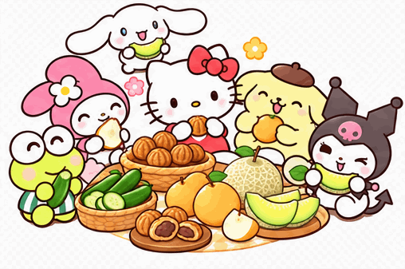
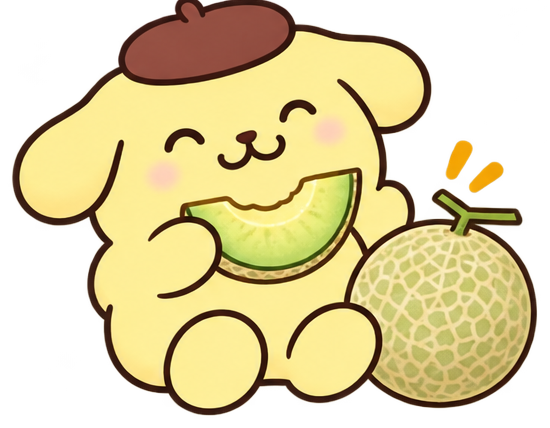
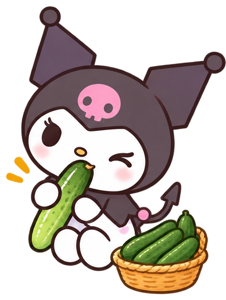
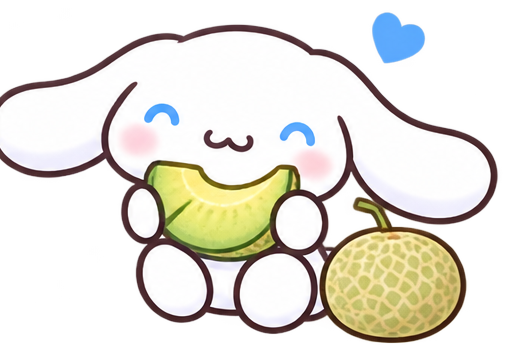

✦ 천안의 맛있는 여행 ✦
천안의 맛있는 보물!
호두과자 · 배 · 오이 · 멜론


맛있는 천안으로 출발! ♥
CHEONAN · TASTE TOUR
천안에는 어떤 맛이 숨어 있을까?
천안에서 만나는 네 가지 맛있는 친구
CHEONAN · TASTE TOUR
달콤한 천안 호두과자
그냥 먹어도 맛있고, 특별한 간식으로 변신!
달콤한 팥소 + 고소한 호두
이렇게 즐겨 보세요!
🍨 호두과자 아이스크림
🥛 호두과자 + 따뜻한 우유
만드는 팁 아이스크림 위에 반으로 자른 호두과자!
CHEONAN · TASTE TOUR
아삭하고 달콤한 천안 배
과즙 가득한 배로 만드는 시원한 간식
아삭함 + 풍부한 과즙
배로 무엇을 만들까요?
🥤 배 스무디
🥗 배 과일샐러드
만드는 팁 배 + 우유를 갈거나, 과일과 함께 섞어요!
CHEONAN · TASTE TOUR
싱싱하고 아삭한 천안 오이
오이의 신선함을 살린 간단한 요리

수분 가득 + 아삭아삭
오이로 무엇을 만들까요?
🥒 새콤달콤 오이무침
🥪 오이 샌드위치
만드는 팁 얇게 썰어 무치거나 빵 사이에 쏙!
CHEONAN · TASTE TOUR
달콤함 가득 천안 멜론
부드러운 멜론으로 만드는 달콤한 디저트

수신 멜론 · 하늘그린
멜론으로 무엇을 만들까요?
🍧 멜론 화채
🍦 멜론 요거트컵
만드는 팁 멜론 조각 + 우유 또는 요거트!
CHEONAN · TASTE TOUR
천안 특산물과 함께하는 축제
맛보고, 웃고, 함께 즐기는 행복한 하루
축제에서 즐겨요!
🍡 맛있는 간식
🍐 신선한 과일
💛 가족의 추억
✦ THANK YOU ✦
맛있는 천안으로 놀러 오세요!
네 가지 맛있는 보물이 여러분을 기다려요 ♡
호두과자
배
오이
멜론